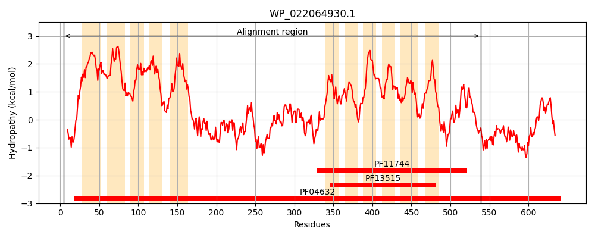
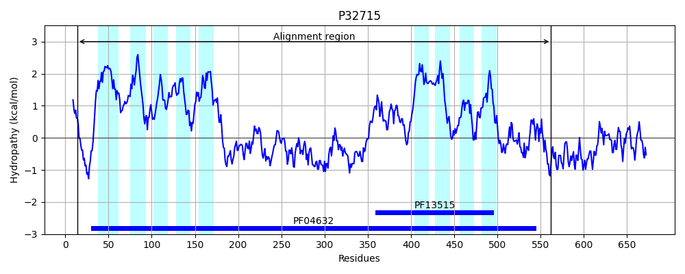
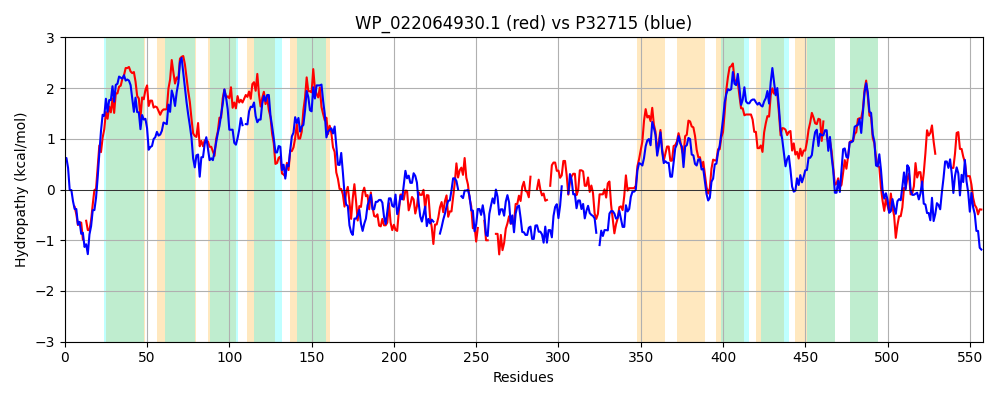

Hit Accession: P32715
Hit TCID: 2.A.85.6.1
Hit Description: gnl|BL_ORD_ID|9855 gnl|TC-DB|P32715|2.A.85.6.1 Multidrug resistance protein mdtO OS=Escherichia coli (strain K12) GN=mdtO PE=3 SV=2
Mach Len: 558
e:0.000000
Query TMS Count : 11
Hit TMS Count: 9
TMS-Overlap Score: 7.250000
Predicted Substrates:CHEBI:383703;3,6-diamino-10-methylacridinium chloride, CHEBI:8641;puromycin
BLAST Alignment:
Score: 815 , Bit scores: 318 bits, E-value: 1.6e-99, Alignment length: 558, Percentage identity: 37
Query: 4 LAHFLRQELRDA-PGRASYTLRLTLSCAVLITLFMTLQIPFLAVALIVVFYVSQPNVLMIKLVSVVFFVTVTVALGGVLLIIKWTYDYPLIRLAASVALFFCAIYLMRVLGKLGLAFFVVALAVIYAQTFPSMTSQSEILVRLLLWLWVAINTAILVTLLVNACFQQAFPGNQFKARLAGMLHEVARRLTAPGDEAPPTFGETAAQFNQLQSLFAQASRATPEIAAEPQAWRSRLAATLRCYQLAALLQADE---ADS----EDRQQLSQAVLKLKSALSEEQF---DGAIPPL-ALSGRGINHAVLQEMATLLQQLAQGEPVALPQGEVEKAPLLAPDAWRNPAYLHFALKTLLATLICYVFYTAADWQGLHTIMLSCVIVAQPGLGATMQKTWLRIGGALLATLLALLLIVFVQPWTDSLSGLLAMSLPVLALAAWIAAGSERIAYAGIQIGFTFALAFL-SWFGPLTNLTELRDRVLGILLGVLVSSIVHLYLWPDSEAPQLKSRLAALYRRLADCLAAPKEAVPLA---------PLFVAFTDSEALLHRVRAE 539
L F +EL + PGR T++L + C ++I + MT +IPF+A++L V+FY Q N K V+++F V + +G + LI KW+Y PLIRL + + ++LMR +LGL FF VA+ IY QTFP+M E++VRL LW V L+ L+ + + +Q L L + LT P T E A Q ++F A A AW AT+ Y + L + D ADS E RQ+L+ + KL+ A++E Q D I A++ R N L+ + L QL Q +P P K P +A DA+ NP Y+ +A+KTLLA LICY FY+ DW+G+HT ML+CVIVA P +G++ QK LR GGA +LALL + V PW D++ LL + P+ L AWIA SER +Y G Q+ TFALA L + FGP+ +L E+RDR LGI++G +VS++++ ++WP+SEA L +LA L+ + P++ A L AF E + RV E
Sbjct: 14 LLAFFHEELSERRPGRVPQTVQLWVGCLLVILISMTFEIPFVALSLAVLFYGIQSNAFYTKFVAILFVVATVLEIGSLFLIYKWSYGEPLIRLIIAGPILMGCMFLMRT-HRLGLVFFAVAIVAIYGQTFPAMLDYPEVVVRLTLWCIVVGLYPTLLMTLIGVLWFPSRAISQMHQALNDRLDDAISHLTDSLAPLPETRIEREALALQKLNVFCLADDANWRTQ---NAWWQSCVATVT-YIYSTLNRYDPTSFADSQAIIEFRQKLASEINKLQHAVAEGQCWQSDWRISESEAMAARECN---LENICQTLLQLGQMDPNT-PPTPAAKPPSMAADAFTNPDYMRYAVKTLLACLICYTFYSGVDWEGIHTCMLTCVIVANPNVGSSYQKMVLRFGGAFCGAILALLFTLLVMPWLDNIVELLFVLAPIFLLGAWIATSSERSSYIGTQMVVTFALATLENVFGPVYDLVEIRDRALGIIIGTVVSAVIYTFVWPESEARTLPQKLAGTLGMLSKVMRIPRQQEVTALRTYLQIRIGLHAAFNACEEMCQRVALE 562 | Protein Hydropathy Plots: |
|---|
|  |  |
Pairwise Alignment-Hydropathy Plot:
|
|---|
|  |